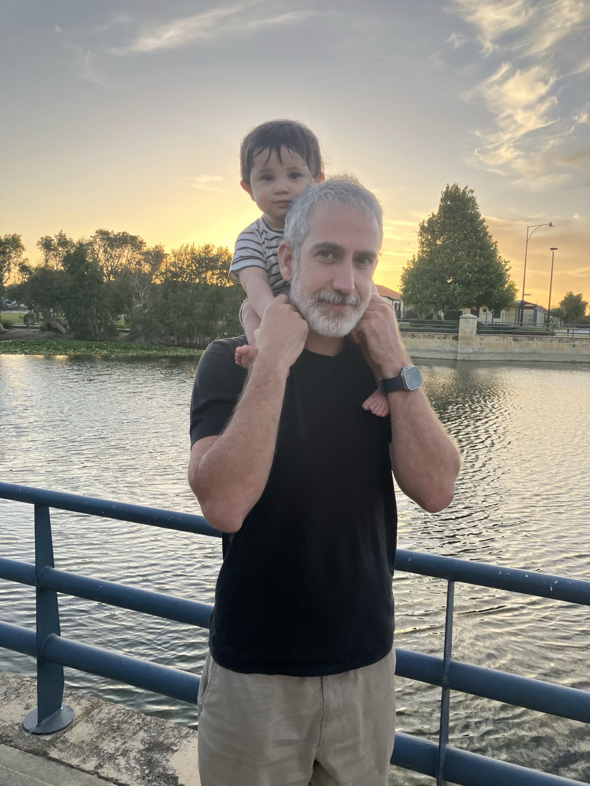
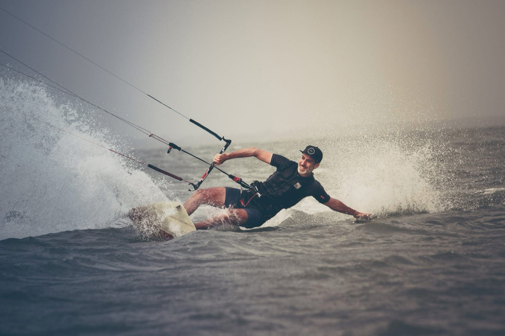
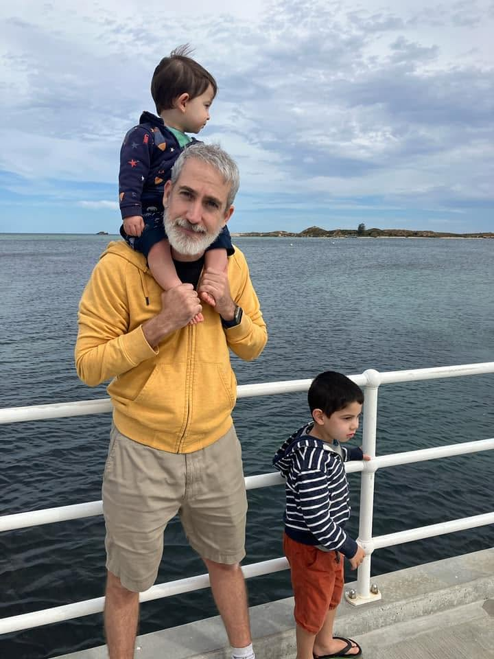

PierreSauvignon
Entrepreneur with a product bias. I turn early-stage ideas into products people use and pay for.

The road here
I started my first venture fresh out of high school, back when Internet access came in the mail, and I haven't stopped since.
Originally from France, I moved to Australia while finishing a Masters of IT and jumped straight into Sydney's startup scene, joining Pollenizer in its earliest days.
Over the next five years our team built Australia's first and biggest web incubator, helping launch 100+ startups and co-founding ~30 businesses. We had plenty of failures (and learned a lot), codified what became the "Startup Science," and even wrote a book to share it. We also had wins: one venture sold to Yahoo!7 for AU$40M, and several others turned profitable.
In 2013 I took a breather in the south of France and restored a 200-year-old house. In 2015 I joined Evergiving (a Pollenizer alumni) as Product Manager / Designer to lead a platform, brand and design reboot.
At the end of 2016 I moved back to Sydney to coach startups. A little later my wife and I relocated to Perth, where I joined RAC to incubate new ventures within its innovation arm. That's where I created Heyscape, off-grid tiny-cabin stays in remote corners of Western Australia. I grew it from idea to profitability in four years, reaching 25 cabins across 7 sites. Watch the brand story to see the cabins, the locations, and me wearing a buttoned-up shirt (rare!).
After four years at Heyscape it was time for a new challenge, and along the way my wife and I launched two little "startups" at home (kids!). These days I'm doing what I love most: building a small portfolio of software products, solo. A mix of consumer apps and tools for developers. I also contract with established businesses to put AI to work where it counts. Most recently, as AI Tech Lead at Respondent.io, I took their supply-side platform from zero to a production back-office, autonomous AI agent included, in under three months.
Early 2027 we're moving to Toulouse. After nearly two decades in Australia I'm bringing the founder-engineer toolkit home to France, and looking for a lead product or engineering role where a hands-on, AI-first way of building can help a team move faster.

